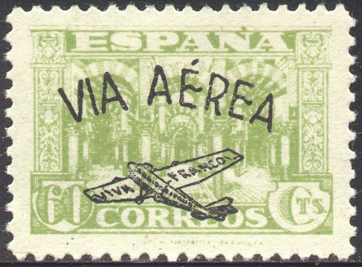
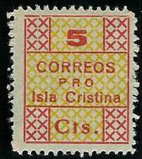

{kind=link}



Return To Catalogue - Spain civil war issues, part 1 - Spain
Note: on my website many of the
pictures can not be seen! They are of course present in the
catalogue;
contact me if you want to purchase it.
The civil war between the nationalists and replubicans lasted from 1936 to 1939 in Spain. Many provisional stamps were issued. However, there is a certain number of stamps that was issued for stamp collectors only. I will give some examples here, without any intention of being complete.
Spain civil war issues, part 1
Stamps of Spain, overprinted 'VIA AEREA VIVA FRANCO' and earoplane
'Cruzada contra el frio'
'Pro sevilla'

'Arriba Espana Jose Antonio'

'Pro las Palmas'

I have also seen this stamp with a black border printed on it and the black text: 'CORREOS GENERAL SANJURJO PRESENTE 10 C'.
'Sello provincial Correspondencia'

Inscription 'VIVA FRANCO'

Reduced sizes, 'AYAMONTE' image obtained thanks to Kenneth
Thompson. I've also seen a perforated 5 c blue (without the red
'VIVA FRANCO' inscription).
(Sheet with inscription 'COCINAS ECONOMICAS AYAMONTE' 5 c red and
blue, image obtained thanks to Kenneth Thompson). I've also seen
a perforated 5 c red (no blue background color).
Inscription 'PRO-COMBATIENTES LUGO' with image of soldier:
EXCMO.AYUNTAMIENTO DE LUGO PRO PARO OBRERO 10 c
'PARO OBRERO AYUTAMIENTO DE LEON' arms with lion.
'CIJUELA Sello de Caridada' 5 c lilac, I have also seen a 5 c
blue
'Ayuntamiento de Cazalla Sello Benefico' 5 c black, I have also
seen a 5 c red.
'SELLO BENEFICO CARMONA', two different designs
'Sello benefico LORA DEL RIO' 5 c blue

Stamps - Briefmarken - Timbres-Poste - Postzegels - Francobolli - Estampillas
{kind=link}